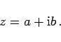
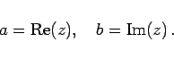
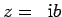
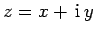

Die allgemeine Form einer komplexen Zahl lautet
|  | (1.133a) |
Wenn a und b alle möglichen reellen Werte durchlaufen, dann werden alle möglichen komplexen Zahlen z erzeugt. Die Zahl a wird Realteil, die Zahl b Imaginärteil der Zahl z genannt:
|  | (1.133b) |
Für b =0 wird z =a, so daß die reellen Zahlen zum Spezialfall der komplexen Zahlen werden. Für a =0 wird  eine ,,rein imaginäre Zahl``.
Die komplexen Zahlen bilden die Menge der komplexen Zahlen, die mit  bezeichnet wird.
bezeichnet wird.
Hinweis: Funktionen w =f(z) einer komplexen Variablen  werden in der Funktionentheorie betrachtet.